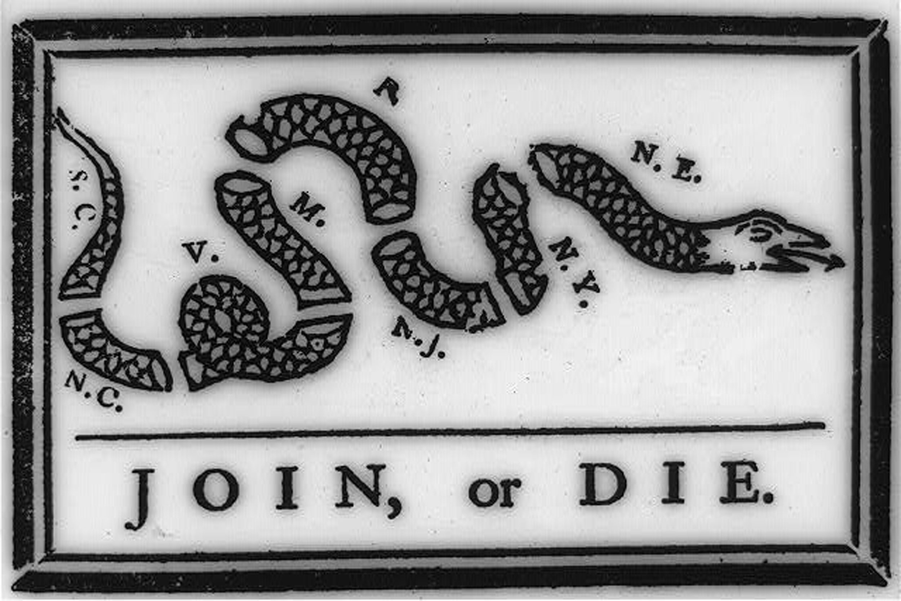
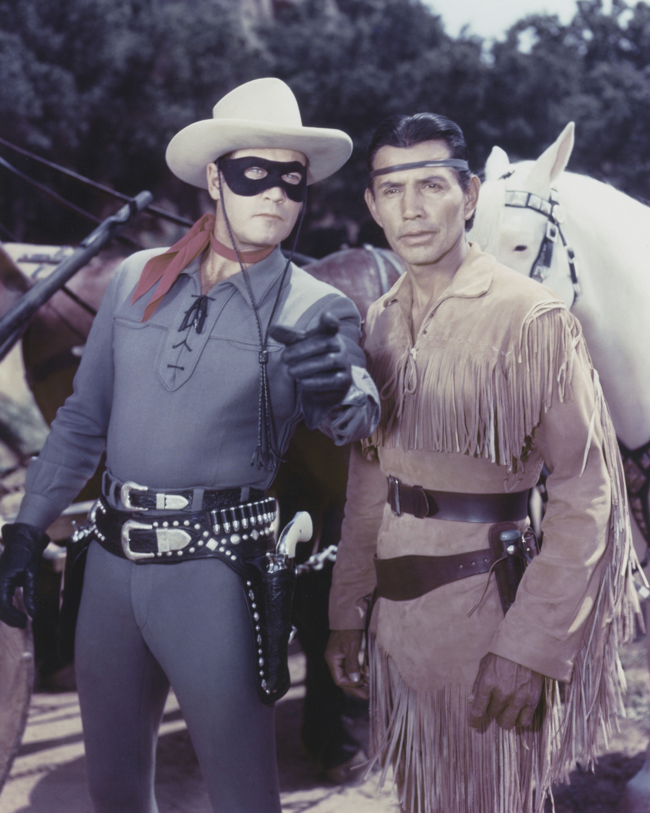

When media consumers think of media messages, they may think of televised public service announcements or political advertisements. These obvious examples provide a venue for the transfer of a message through a medium, whether that message is a plea for fire safety or the statement of a political position. But what about more abstract political advertisements that simply show the logo of a candidate and a few simple words? Media messages can range from overt statements to vague expressions of cultural values.
Disagreements over the content of media messages certainly exist. Consider the common allegations of political bias against various news organizations. Accusations of hidden messages or agenda-driven content have always been an issue in the media, but as the presence of media grows, the debate concerning media messages increases. This dialogue is an important one; after all, mass media have long been used to persuade. Many modern persuasive techniques stem from the use of media as a propaganda tool. The role of propaganda and persuasion in the mass media is a good place to start when considering various types of media effects.
Encyclopedia Britannica defines propaganda simply as the “manipulation of information to influence public opinion.”Britannica Concise Encyclopedia, s.v. “Propaganda.” This definition works well for this discussion because the study and use of propaganda has had an enormous influence on the role of persuasion in modern mass media. In his book The Creation of the Media, Paul Starr argues that the United States, as a liberal democracy, has favored employing an independent press as a public guardian, thus putting the media in an inherently political position.Paul Starr, Creation of the Media (New York: Basic Books, 2004), 394–395. The United States—in contrast to other nations where media are held in check—has encouraged an independent commercial press and thus given the powers of propaganda and persuasion to the public.Paul Starr, Creation of the Media (New York: Basic Books, 2004), 394–395.
Figure 2.2
Benjamin Franklin used a powerful image of a severed snake to emphasize the importance of the colonies joining together during the American Revolution.
Like any type of communication, propaganda is not inherently good or bad. Whether propaganda has a positive or negative effect on society and culture depends on the motivations of those who use it and the understandings of those who receive it. People promoting movements as wide-ranging as Christianity, the American Revolution, and the communist revolutions of the 20th century have all used propaganda to disseminate their messages.Garth S. Jowett and Victoria O’Donnell, Propaganda and Persuasion (Thousand Oaks, CA: Sage, 2006), 60–61. Newspapers and pamphlets that glorified the sacrifices at Lexington and Concord and trumpeted the victories of George Washington’s army greatly aided the American Revolution. For example, Benjamin Franklin’s famous illustration of a severed snake with the caption “Join, or Die” serves as an early testament to the power and use of print propaganda.Garth S. Jowett and Victoria O’Donnell, Propaganda and Persuasion (Thousand Oaks, CA: Sage, 2006), 80–81.
As you will learn in Chapter 4 "Newspapers", the penny press made newspapers accessible to a mass audience and became a force for social cohesion during the 1830s.Garth S. Jowett and Victoria O’Donnell, Propaganda and Persuasion (Thousand Oaks, CA: Sage, 2006), 95–96. Magazines adopted a similar format later in the 19th century, and print media’s political and social power rose. In an infamous example of the new power of print media, some newspapers encouraged the Spanish-American War of 1898 by fabricating stories of Spanish atrocities and sabotage.Garth S. Jowett and Victoria O’Donnell, Propaganda and Persuasion (Thousand Oaks, CA: Sage, 2006), 103–104. For example, after the USS Maine sunk off the coast of Havana, Cuba, some newspapers blamed the Spanish—even though there was no evidence—fueling the public’s desire for war with Spain.
The present-day, pejorative connotation of propaganda recalls the utilization of mass media by World War I–era governments to motivate the citizenry of many countries to go to war. Some media outlets characterized that war as a global fight between Anglo civilization and Prussian barbarianism. Although some of those fighting the war had little understanding of the political motivations behind it, wartime propaganda convinced them to enlist.Mark Crispin Miller, introduction to Propaganda, by Edward Bernays (Brooklyn, NY: IG Publishing, 2005), 11. As you will read in Chapter 12 "Advertising and Public Relations", World War I legitimized the advertising profession in the minds of government and corporate leaders because its techniques were useful in patriotic propaganda campaigns. Corporations quickly adapted to this development and created an advertising boom in the 1920s by using World War I propaganda techniques to sell products.Mark Crispin Miller, introduction to Propaganda, by Edward Bernays (Brooklyn, NY: IG Publishing, 2005), 12.
In modern society, the persuasive power of the mass media is well known. In the years after 9/11, there were multiple reports of the death of Osama bin Laden; people desperately wanted to believe he was killed. In reality, he was killed in 2011. Governments, corporations, nonprofit organizations, and political campaigns rely on both new and old media to create messages and to send them to the general public. During and since the 2008 Presidential election, there has been constant scrutiny over Barack Obama’s birthplace and citizenship; the reports are discredited, but the questions resurface. The comparatively unregulated nature of U.S. media has made, for better or worse, a society in which the tools of public persuasion are available to everyone.
Although the mass media send messages created specifically for public consumption, they also convey messages that are not properly defined as propaganda or persuasion. Some argue that these messages influence behavior, especially the behavior of young people.Alexandra Beatty, “Studying Media Effects on Children and Youth: Improving Methods and Measures, Workshop Summary,” March 2–3, 2006, The National Academies Press, http://www.nap.edu/openbook.php?record_id=11706; “Media Influence on Youth,” Crisis Connection, http://www.crisisconnectioninc.org/teens/media_influence_on_youth.htm. Violent, sexual, and compulsive behaviors have been linked to media consumption and thus raise important questions about the effects of media on culture.
On April 20, 1999, students Eric Harris and Dylan Klebold entered their Denver-area high school, Columbine High School, armed with semiautomatic weapons and explosives. Over the next few hours, the pair killed 12 classmates and one faculty member before committing suicide.Gina Lamb, “Columbine High School,” Times Topics, New York Times, April 17, 2008, http://topics.nytimes.com/topics/reference/timestopics/organizations/c/columbine_high_school/index.html. The tragedy and its aftermath captured national attention, and in the weeks following the Columbine High School shootings, politicians and pundits worked to assign blame. Their targets ranged from the makers of the first-person shooter video game Doom to the Hollywood studios responsible for The Matrix.Tom Brook, “Is Hollywood to Blame?” BBC News, April 23, 1999, http://news.bbc.co.uk/2/hi/special_report/1999/03/99/tom_brook/326529.stm.
However, in the years since the massacre, research has revealed that the perpetrators were actually attempting a terrorist bombing rather than a first-person shooter style rampage.Greg Toppo, “10 Years Later, the Real Story Behind Columbine,” USA Today, April 13, 2009, http://www.usatoday.com/news/nation/2009-04-13-columbine-myths_N.htm. But did violent video games so desensitize the two teenagers to violence that they could contemplate such a plan? Did movies that glorify violent solutions create a culture that would encourage people to consider such methods? Because modern culture is so immersed in media, the issue becomes a particularly complex one, and it can be difficult to understand the types of effects that violent media produce.
A number of studies have verified certain connections between violent video games and violent behavior in young people. For example, studies have found that some young people who play violent video games reported angry thoughts and aggressive feelings immediately after playing. Other studies, such as one conducted by Dr. Chris A. Anderson and colleagues, point to correlations between the amount of time spent playing violent video games and increased incidence of aggression.Craig A. Anderson and others, “The Influence of Media Violence on Youth,” Psychological Science in the Public Interest 4, no. 3 (2003): 81–110. However, these studies do not prove that video games cause violence. Video game defenders argue that violent people can be drawn to violent games, and they point to lower overall incidence of youth violence in recent years compared to past decades.Jill U. Adams, “Effects of Violent Video Games,” Los Angeles Times, May 3, 2010, http://articles.latimes.com/2010/may/03/health/la-he-closer-20100503. Other researchers admit that individuals prone to violent acts are indeed drawn to violent media; however, they claim that by keeping these individuals in a movie theater or at home, violent media have actually contributed to a reduction in violent social acts.Peter Goodman, “Violent Films May Cut Real Crime, Study Finds,” New York Times, January 7, 2008, http://www.nytimes.com/2008/01/07/technology/07iht-violence.4.9058958.html.
Figure 2.3
The 1999 Columbine High School shooting led to greater debate and criticism over violent video games.
Source: Used with permission from Getty Images.
Whether violent media actually cause violence remains unknown, but unquestionably these forms of media send an emotional message to which individuals respond. Media messages are not limited to overt statements; they can also use emotions, such as fear, love, happiness, and depression. These emotional reactions partially account for the intense power of media in our culture.
In many types of media, sexual content—and its strong emotional message—can be prolific. A recent study by researchers at the University of North Carolina titled “Sexy Media Matter: Exposure to Sexual Content in Music, Movies, Television, and Magazines Predicts Black and White Adolescents’ Sexual Behavior” found that young people with heavy exposure to sexually themed media ranging from music to movies are twice as likely to engage in early sexual behavior as young people with light exposure. Although the study does not prove a conclusive link between sexual behavior and sexually oriented media, researchers concluded that media acted as an influential source of information about sex for these youth groups.Kathleen Doheny, “Mass Media May Prompt Kids to Try Sex: Study,” Health Scout, April 3, 2006, http://www.healthscout.com/news/1/531862/main.html. Researcher Jane Brown thinks part of the reason children watch sexual content is related to puberty and their desire to learn about sex. While many parents are hesitant to discuss sex with their children, the media can act like a “super peer,” providing information in movies, television, music, and magazines.Kathleen Doheny, “Mass Media May Prompt Kids to Try Sex: Study,” Health Scout, April 3, 2006, http://www.healthscout.com/news/1/531862/main.html. Reality series, such as Teen Mom and 16 and Pregnant, are prevalent on the popular MTV station. We will explore in greater detail the impact of sexual content in the media in Chapter 14 "Ethics of Mass Media".
The media sends messages that reinforce cultural values. These values are perhaps most visible in celebrities and the roles that they adopt. Actors such as Jake Gyllenhaal and Scarlett Johansson have come to represent aspects of masculinity and femininity that have been adopted into mainstream culture in the last 10 years. In recent years, baseball player Derek Jeter appeared in television, film, magazines, and advertising campaigns as a model of athleticism and willpower. Singers such as Bono of U2 have represented a sense of freedom and rebellion against mainstream culture.
Although many consider celebrity culture superficial and a poor reflection of a country’s values, not all celebrities are simply entertainers. Civil rights leaders, social reformers, and other famous public figures have come to represent important cultural accomplishments and advancements through their representations in the media. When images of Abraham Lincoln or Lady Gaga appear in the media, they resonate with cultural and historical themes greatly separated from mere fame.
Celebrities can also reinforce cultural stereotypesAn image or character that generalizes and oversimplifies a particular group of people. that marginalize certain groups. Television and magazines from the mid-20th century often portrayed women in a submissive, domestic role, both reflecting and reinforcing the cultural limitations imposed on women at the time. Advertising icons developed during the early 20th century, such as Aunt Jemima and the Cream of Wheat chef, similarly reflected and reinforced a submissive, domestic servant role for African Americans. Other famous stereotypes—such as the Lone Ranger’s Native American sidekick, Tonto, or Mickey Rooney’s Mr. Yunioshi role in Breakfast at Tiffany’s—also reinforced American preconceptions about ethnic predispositions and capabilities.
Figure 2.4
Tonto from The Lone Ranger reinforced cultural stereotypes about Native Americans. Do you think this type of characterization would be acceptable in modern television?
Source: Used with permission from Getty Images.
Whether actual or fictional, celebrities and their assumed roles send a number of different messages about cultural values. They can promote courageous truth telling, hide and prolong social problems, or provide a concrete example of an abstract cultural value.
New media—the Internet and other digital forms of communication—have had large effects on society. This communication and information revolution has created a great deal of anguish about digital literacy and other issues that inevitably accompany such a social change. In his book on technology and communication, A Better Pencil, Dennis Baron discusses this issue:
For Plato, only speech, not writing, can produce the kind of back-and-forth—the dialogue—that’s needed to get at the truth … the text, orphaned by its author once it’s on the page, cannot defend itself against misreading…. These are strong arguments, but even in Plato’s day they had been rendered moot by the success of the written word. Although the literacy rate in classical Greece was well below 10 percent, writing had become an important feature of the culture. People had learned to trust and use certain kinds of writing—legal texts, public inscriptions, business documents, personal letters, and even literature—and as they did so, they realized that writing, on closer examination, turned out to be neither more nor less reliable or ambiguous than the spoken word, and it was just as real.Dennis Baron, A Better Pencil: Readers, Writers, and the Digital Revolution (New York: Oxford University Press, 2009), 5.
Baron makes the point that all communication revolutions have created upheavals and have changed the standards of literacy and communication. This historical perspective gives a positive interpretation to some otherwise ominous developments in communication and culture.
The Internet has made an incredible amount of new information available to the general public. Both this wealth of information and the ways people process it are having an enormous effect on culture. New perceptions of information have emerged as access to it grows. Older-media consumption habits required in-depth processing of information through a particular form of media. For example, consumers read, watched, or viewed a news report in its entirety, typically within the context of a news publication or program. Fiction appeared in book or magazine form.
Today, information is easier to access, thus more likely to traverse several forms of media. An individual may read an article on a news website and then forward part of it to a friend. That person in turn describes it to a coworker without having seen the original context. The ready availability of information through search engines may explain how a clearly satirical Onion article on the Harry Potter phenomenon came to be taken as fact. Increasingly, media outlets cater to this habit of searching for specific bits of information devoid of context. Information that will attract the most attention is often featured at the expense of more important stories. At one point on March 11, 2010, for example, The Washington Post website’s most popular story was “Maintaining a Sex Life.”Michiko Kakutani, “Texts Without Context,” New York Times, March 17, 2010, http://www.nytimes.com/2010/03/21/books/21mash.html.
Another important development in the media’s approach to information is its increasing subjectivity. Some analysts have used the term cyberbalkanization to describe the way media consumers filter information. Balkanization is an allusion to the political fragmentation of Eastern Europe’s Balkan states following World War I, when the Ottoman Empire disintegrated into a number of ethnic and political fragments. Customized news feeds allow individuals to receive only the kinds of news and information they want and thus block out sources that report unwanted stories or perspectives. Many cultural critics have pointed to this kind of information filtering as the source of increasing political division and resulting loss of civic discourse. When media consumers hear only the information they want to, the common ground of public discourse that stems from general agreement on certain principles inevitably grows smaller.Michiko Kakutani, “Texts Without Context,” New York Times, March 17, 2010, http://www.nytimes.com/2010/03/21/books/21mash.html.
On one hand, the growth of the Internet as the primary information source exposes the public to increased levels of text, thereby increasing overall literacy. Indeed, written text is essential to the Internet: Web content is overwhelmingly text-based, and successful participation in Internet culture through the use of blogs, forums, or a personal website requires a degree of textual literacy that is not necessary for engagement in television, music, or movies.
Critics of Internet literacy, however, describe the majority of forum and blog posts as subliterate and argue that the Internet has replaced the printed newspapers and books that actually raised the standards of literacy. One nuanced look at the Internet’s effect on the way a culture processes and perceives information states that literacy will not simply increase or decrease but will change qualitatively.Suzanne Choney, “Internet Making Our Brains Different, Not Dumb,” MSNBC, Feb. 19, 2010, http://www.msnbc.msn.com/id/35464896/ns/technology_and_science-tech_and_gadgets/. Perhaps the standards for literacy will shift to an emphasis on simplicity and directness, for example, rather than on elaborate uses of language.
Figure 2.5
President Barack Obama fired General Stanley McChrystal after a controversial Rolling Stone story in which McChrystal spoke poorly of the Obama administration was leaked on the Internet.
Certainly, the Internet has affected the way that cultures consume news. The public expects to receive information quickly, and news outlets respond rapidly to breaking stories. On Monday, June 21, 2010, for example, a spokesperson for Rolling Stone magazine first released quotes from a story featuring General Stanley McChrystal publicly criticizing members of the Obama administration on matters of foreign policy. By that evening, the story had become national news despite the fact Rolling Stone didn’t even post it to its website until Tuesday morning—some time after several news outlets had already posted the entire story on their own sites. Later that same day, McChrystal issued a public apology, and on Wednesday flew to Washington where President Barack Obama fired him. The printed Rolling Stone issue featuring the article hit newsstands Friday, two days after McChrystal had been replaced.Jim Timpane, “New Media Too Speedy to Outflank,” Philly.com, June 24, 2010, http://www.philly.com/philly/entertainment/20100624_New_media_too_speedy_to_outflank.html.
As we have seen, the term convergence can hold several different meanings. In Convergence Culture: Where Old and New Media Collide, Henry Jenkins offers a useful definition of convergence as it applies to new media:
“By convergence, I mean the flow of content across multiple media platforms, the cooperation between multiple media industries, and the migratory behavior of media audiences who will go almost anywhere in search of the kinds of entertainment experiences they want.”Henry Jenkins, Convergence Culture: Where Old and New Media Collide (New York: New York University Press, 2006), 2.
A self-produced video on the YouTube website that gains enormous popularity and thus receives the attention of a news outlet is a good example of this migration of both content and audiences. Consider this flow: The video appears and gains notoriety, so a news outlet broadcasts a story about the video, which in turn increases its popularity on YouTube. This migration works in a number of ways. Humorous or poignant excerpts from television or radio broadcasts are often posted on social media sites and blogs, where they gain popularity and are seen by more people than had seen the original broadcast.
Thanks to new media, consumers now view all types of media as participatory. For example, the massively popular talent show American Idol combines an older-media format—television—with modern media consumption patterns by allowing the home audience to vote for a favorite contestant. However, American Idol segments regularly appear on YouTube and other websites, where people who may never have seen the show comment on and dissect them. Phone companies report a regular increase in phone traffic following the show, presumably caused by viewers calling in to cast their votes or simply to discuss the program with friends and family. As a result, more people are exposed to the themes, principles, and culture of American Idol than the number of people who actually watch the show.Henry Jenkins, Convergence Culture: Where Old and New Media Collide (New York: New York University Press, 2006), 83.
New media have encouraged greater personal participation in media as a whole. Although the long-term cultural consequences of this shift cannot yet be assessed, the development is undeniably a novel one. As audiences become more adept at navigating media, this trend will undoubtedly increase.
Figure 2.6
In 2001, high school student Dino Ignacio created a collage of Sesame Street character Bert with terrorist Osama bin Laden as part of a series for his website. Called “Bert Is Evil,” the series featured the puppet engaged in a variety of illicit activities. A Bangladesh-based publisher looking for images of bin Laden found the collage on the Internet and used it in an anti-American protest poster, presumably without knowledge of who Bert was. This ended up in a CNN report on anti-American protests, and public outrage over the use of Bert made Ignacio’s original site a much-imitated cult phenomenon.
The voyage of this collage from a high school student’s website to an anti-American protest poster in the Middle East to a cable television news network and finally back to the Internet provides a good illustration of the ways in which content migrates across media platforms in the modern era. As the collage crossed geographic and cultural boundaries, it grew on both corporate and grassroots media. While this is not the norm for media content, the fact that such a phenomenon is possible illustrates the new directions in which media is headed.Henry Jenkins, Convergence Culture: Where Old and New Media Collide (New York: New York University Press, 2006), 1–2.
Explain how the media has affected culture. Be sure to discuss the following topics and to provide examples of each.